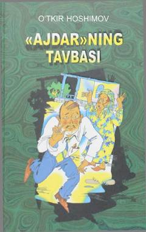

ATO'tkir Hoshimovning yorqin va kulgili hajviy qissa hamda hikoyalar to'plami.
Mazkur to'plam O'zbekiston xalq yozuvchisi O'tkir Hoshimovning eng sara hajviy qissa va hikoyalarini o'z ichiga oladi. Kitobdagi voqealar va hangomalar o'quvchiga ko'tarinki kayfiyat ulashib, beixtiyor tabassum uyg'otadi. Asar yozuvchining o'ziga xos o'tkir tili va hazil-mutoyibaga boy uslubida yozilgan.